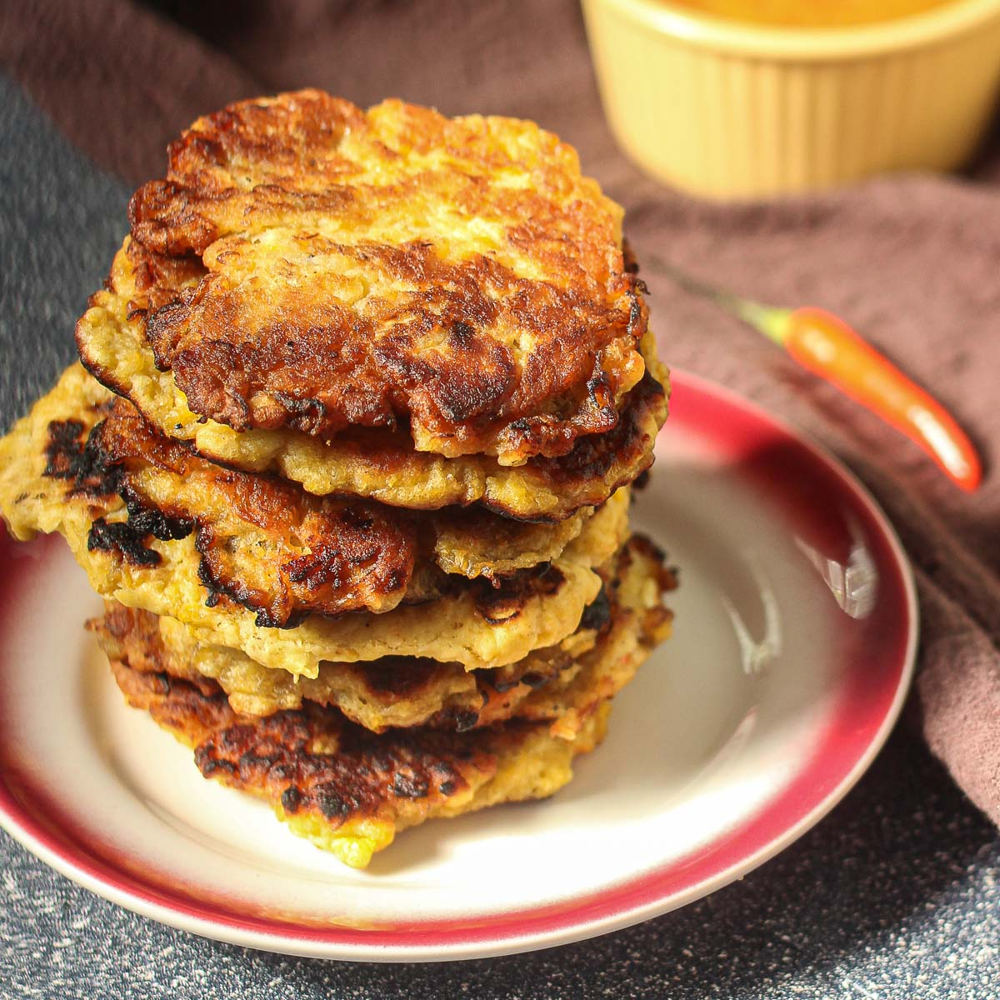

Tatale

Description
Tatale is an authentic pancake style food in Ghana, made with plantains.
Ingredients
- 2 yellow plantains (very ripe)
- ½ cup corn flour (fine corn meal)
- 1 onion, chopped
- 1 teaspoon grated fresh ginger
- 1 small lemon (freshly squeezed)
- ½ teaspoon red pepper powder
- ½ pinch salt
- Vegetable oil (for frying)
Steps
- Slice the plantains, place in a large bowl and immediately sprinkle with lemon juice.
- With a fork, mash the plantains and add the onion and ginger.
- Add the corn flour, chilli and salt and mix well with a wooden spoon.
- In a deep skillet, heat a large amount of vegetable oil over medium heat.
- Maintain the temperature of the oil around 340 F (175 C) during frying.
- Form balls the size of a ping pong ball, flatten them slightly and fry on both sides until they are golden brown.
- Serve immediately